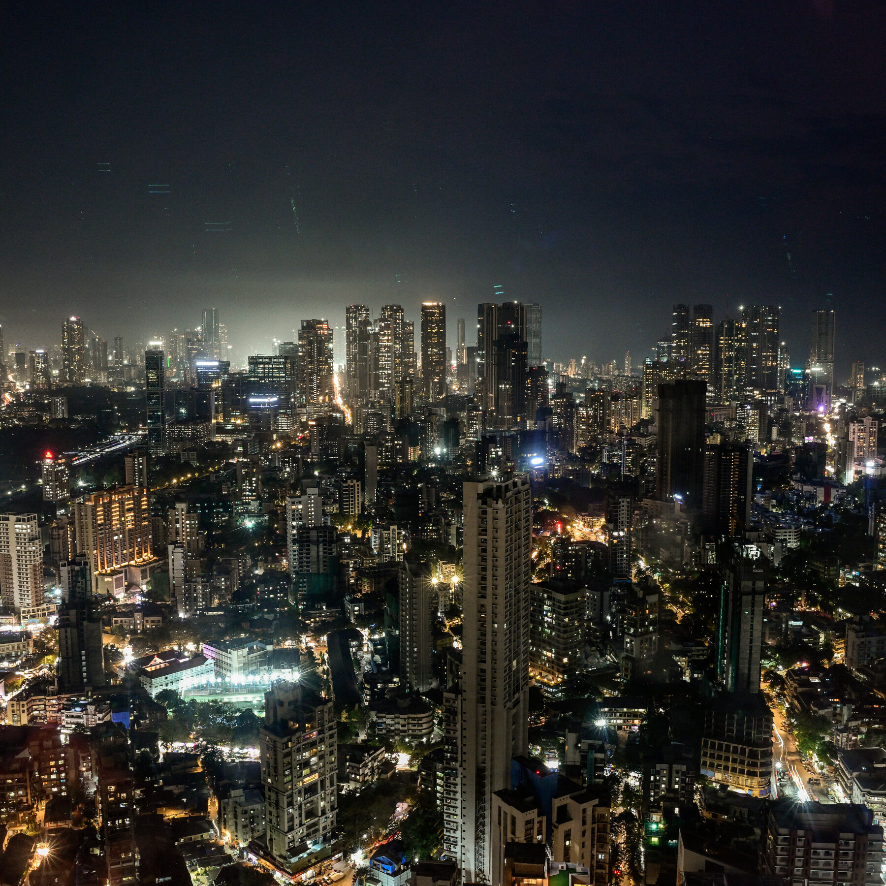

Mumbai, often called “The City of Dreams”, is a dazzling, chaotic, and deeply layered metropolis on India’s west coast. It’s the capital of Maharashtra and the country’s financial, commercial, and entertainment powerhouse.
Let’s break it down: - Population: Over 12 million in the city proper, and more than 23 million in the metro region—making it one of the most densely populated cities in the world..
- Nickname: Known as Maximum City, Bombay (its colonial name), and The City That Never Sleeps. - Geography: Originally a cluster of seven islands, now fused into a sprawling urban landscape
